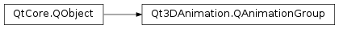

Qt3DAnimation.QAnimationGroup¶
Synopsis¶
Functions¶
- def
addAnimation(animation) - def
animationList() - def
duration() - def
name() - def
position() - def
removeAnimation(animation) - def
setAnimations(animations)
Slots¶
- def
setName(name) - def
setPosition(position)
Signals¶
- def
durationChanged(duration) - def
nameChanged(name) - def
positionChanged(position)
Detailed Description¶
A class grouping animations together
Qt3DAnimation.QAnimationGroupclass is used to group multiple animations so that they can act as one animation. The position set to the group is also set to all animations in a group. The duration is the maximum of the individual animations. The animations can be any supported animation type and do not have to have the same name.
-
class
PySide2.Qt3DAnimation.Qt3DAnimation.QAnimationGroup([parent=nullptr])¶ Parameters: parent – PySide2.QtCore.QObjectConstructs an
PySide2.QtCore.QAnimationGroupwithparent.
-
PySide2.Qt3DAnimation.Qt3DAnimation.QAnimationGroup.addAnimation(animation)¶ Parameters: animation – PySide2.Qt3DAnimation.Qt3DAnimation::QAbstractAnimationAdds new
animationto the group.
-
PySide2.Qt3DAnimation.Qt3DAnimation.QAnimationGroup.animationList()¶ Return type: Returns the list of animations in the group.
-
PySide2.Qt3DAnimation.Qt3DAnimation.QAnimationGroup.duration()¶ Return type: PySide2.QtCore.float
-
PySide2.Qt3DAnimation.Qt3DAnimation.QAnimationGroup.durationChanged(duration)¶ Parameters: duration – PySide2.QtCore.float
-
PySide2.Qt3DAnimation.Qt3DAnimation.QAnimationGroup.nameChanged(name)¶ Parameters: name – unicode
-
PySide2.Qt3DAnimation.Qt3DAnimation.QAnimationGroup.position()¶ Return type: PySide2.QtCore.floatSee also
-
PySide2.Qt3DAnimation.Qt3DAnimation.QAnimationGroup.positionChanged(position)¶ Parameters: position – PySide2.QtCore.float
-
PySide2.Qt3DAnimation.Qt3DAnimation.QAnimationGroup.removeAnimation(animation)¶ Parameters: animation – PySide2.Qt3DAnimation.Qt3DAnimation::QAbstractAnimationRemoves
animationfrom the group.
-
PySide2.Qt3DAnimation.Qt3DAnimation.QAnimationGroup.setAnimations(animations)¶ Parameters: animations – Sets the
animationsto the group. Old animations are removed.
-
PySide2.Qt3DAnimation.Qt3DAnimation.QAnimationGroup.setName(name)¶ Parameters: name – unicode See also
-
PySide2.Qt3DAnimation.Qt3DAnimation.QAnimationGroup.setPosition(position)¶ Parameters: position – PySide2.QtCore.floatSee also
© 2018 The Qt Company Ltd. Documentation contributions included herein are the copyrights of their respective owners. The documentation provided herein is licensed under the terms of the GNU Free Documentation License version 1.3 as published by the Free Software Foundation. Qt and respective logos are trademarks of The Qt Company Ltd. in Finland and/or other countries worldwide. All other trademarks are property of their respective owners.